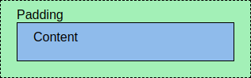
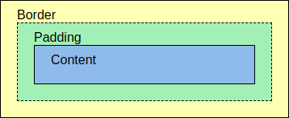
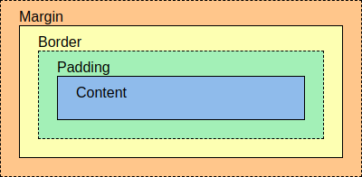

When talking about the layout of centent on a webpage there are three important aspects that will help determine how the content is formatted. These are the margin, border, and the padding, also known as the CSS Box Model.
Working our way from the content at the center out to the edge of the box, we can see that there is a layer around the content that makes up the padding. This will determine the amount of space around the content itself.
Next is the border. The border will go around the padding (and therefore around the content as well).
Finally we have the margin. The margin is the space around the border, and is transparent. Because it is around the border, the margin will surround the padding and the content as well.
Each of these values can be altered using CSS to create specific designs around your content, such as a round profile picture for example.